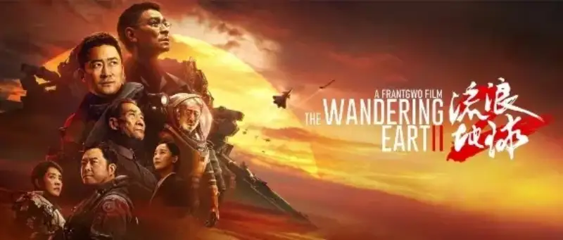
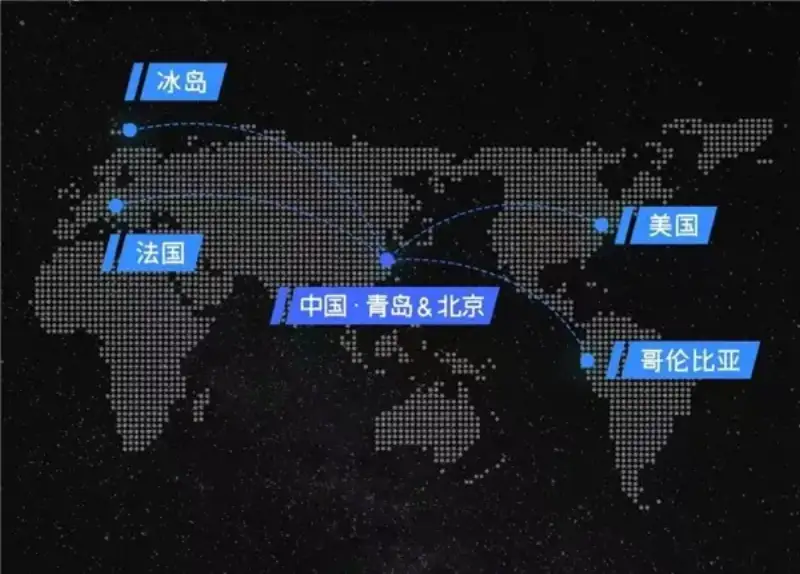
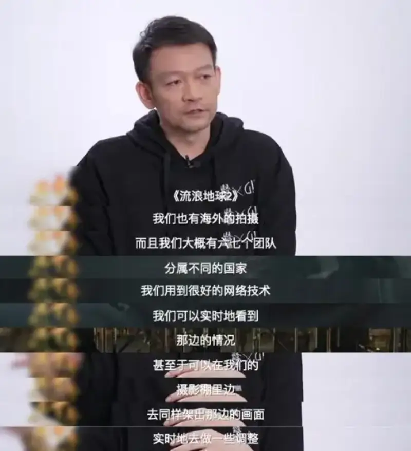
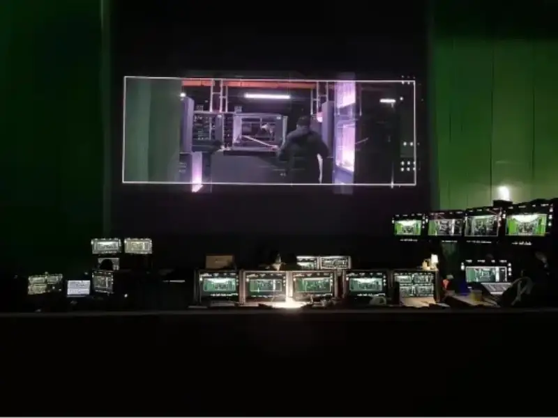

Published: 2023-02-04
Source link: https://www.cnphotos.net/academy/show-113.html

The 2023 Spring Festival box office showed how the Chinese film market recovered after three years of the pandemic. The hottest title of that season was The Wandering Earth II, which everyone in film was talking about.
Twelve days after release, The Wandering Earth II has earned more than 3 billion yuan at the box office and scored 8.0 on IMDb. It has truly become the best Chinese science-fiction film in the eyes of many viewers.
The Wandering Earth II is based on Liu Cixin's science-fiction novel The Wandering Earth. It tells how, in a crisis, humans overcome their differences, unite, and form a true community of shared future, and finally beat the crisis. The first film in the series was praised by viewers as opening the door for Chinese science fiction. The sequel keeps that high level and makes large gains in concepts, sets, and visual effects, surprising viewers in many ways.
(The Wandering Earth II film promotional image)
Behind the striking performance of The Wandering Earth II is the strong support of broad progress in China's film industry.
The Wandering Earth II breaks the old rule of the lone hero in traditional science fiction. With the theme that when danger comes, only duty matters, it vividly shows how people of many nations understand and interpret duty through their own cultures.
To tell this story, the crew shot most scenes in Qingdao, China, but also needed to film across four continents. In the pandemic, shooting overseas faced many hard problems, such as cross-border time zones and switching between countries. The tight schedule also led the crew to choose flexible overseas partner teams and use cloud collaboration to complete the overseas shooting.

In a CCTV-6 interview, director Guo Fan described his experience of cloud collaboration on the overseas shoot like this:

The biggest challenges of overseas shooting can be summed up as follows: the shooting schedule, time zones, and the difficulty of cross-border communication. Distance, time zones, and different communication tools make a unified collaboration tool even more necessary. The key product that made this way of working possible was Yueliu.
The lead team and directors, staying home at the domestic site, could watch live and give timely feedback over the internet. They tracked actors and extras in New York, ten thousand kilometers away, or in Paris, eight thousand kilometers away. For the crew, this opened a new way to co-produce films between China and abroad.
Yueliu is a cloud-collaboration tool built for pre-production film shooting. It offers live picture streaming, proxy-file distribution, and online voice talk. It lets creators, no matter where they are, watch the camera feed and play back footage at any time, and talk by voice with the rest of the lead team. The viewing delay is under one second, which is enough to interact with crew and actors from afar and guide the shoot.
Yueliu has also set up global acceleration nodes. Wherever the shoot is and wherever the collaborators are, the experience stays smooth and live.

Teacher Liu Yang said: the strong quality and look of the film prove that cloud tech and the web can greatly raise the variety and speed of shooting. This gives China's film industry a new model for overseas cooperation.
Cloud-based tools and technology are an excellent catalyst for film industrialization. They are the secret that turns the impossible into the possible.
The steady update of new technology will further speed up China's film industrialization. Director Guo Fan said industrialization is not only about how good the hardware looks. A very important part is the software and the workflow. As they keep exploring and pushing forward, they hope to work out a workflow soon and share it.
As a pioneer of cloud-collaboration tools in film, Yueliu will also iterate and evolve fast. It will bring users stronger features and experience and contribute to the renewal of China's industrial workflow.
In future, we can also turn this whole workflow into an international product solution. We want more films like The Wandering Earth II to appear and let Little Wandering Earth fly out of China to the world.
To reach this goal, the overseas version of Yueliu is being developed and will launch soon.
Teams with cross-location or cross-border production needs are welcome to ask us.